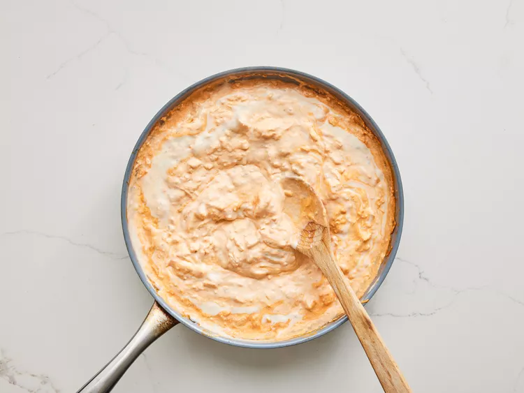
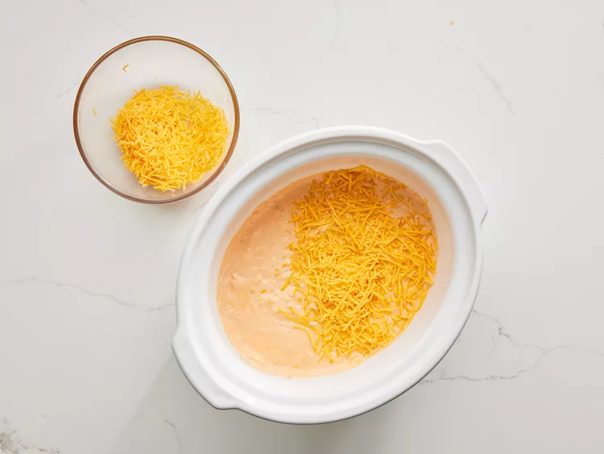
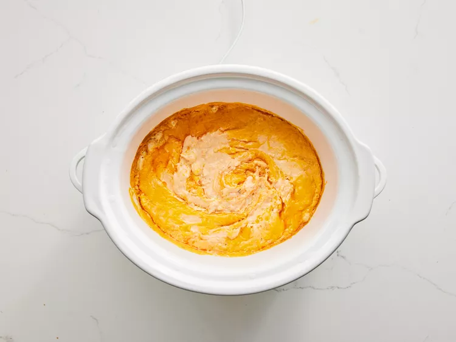

Buffalo Chicken Dip

Description
This tangy, creamy Buffalo chicken dip tastes just like Buffalo chicken wings! Perfect for parties and game day, this chicken dip is best served hot with crackers and celery sticks. Everyone loves the results!
Ingredients
- 10 ounces chicken
- 3/4 cup hot sauce
- 8 ounces cream cheese
- 1 cup ranch dressing
- 1 1/22 cups cheddar cheese
- 1 bunch celery
- 8 ounces chicken-flavored crackers
Directions
- Heat chicken and hot pepper sauce in a skillet over medium heat until heated through, 3 to 5 minutes.
Stir in cream cheese and ranch dressing. Cook and stir until well blended and warm, 3 to 5 minutes.

- Mix in 1/2 of the Cheddar cheese, and transfer the mixture to a slow cooker. Sprinkle the remaining cheese over top.

- Cover and cook on Low until dip is hot and bubbly, about 35 minutes.

- Serve with celery sticks and crackers.
Back to Home